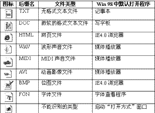
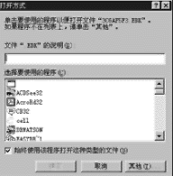
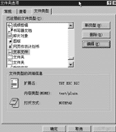
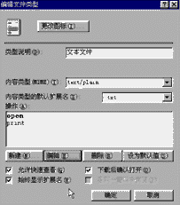
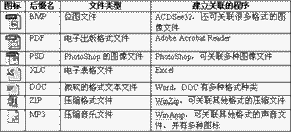

|
|
| 当前位置：电脑报电子版 > 1999 年 > 30 期 > 软件世界 > Windows 中的文件关联 |
| 《 Windows 中的文件关联 》 |
| 1.什么是文件关联 文件关联，是为了在Windows中实现方便的操作，将某一类数据文件与一个相关的程序建立联系，当用鼠标双击这类数据文件时，Windows操作系统就自动启动关联的程序，打开这个数据文件供操作者处理。例如，通用的ASCII码的文本文件，后缀名为TXT，Windows系统中默认的关联程序就是记事本编辑程序。当我们在Windows的文件窗口中双击TXT文件，TXT文件关联的记事本程序就自动启动，读入TXT文件的内容，以供查看和编辑。 文件关联，简化了打开文件的过程。由于Windows中预先设置了多种文件的关联程序，初学者不必知道哪些文件必须由什么样的程序来打开，对于大部分数据文件，直接双击就可以调用相关的程序来查看和处理了。 2.关联图标 有关联程序的文件，大都以某个特征图标来表示是一个什么类型的文件，例如，一个TXT文本文件，就是用一个简单的笔记簿图形来表示。一个文件用什么图标来显示以及关联的程序，都是由Windows来管理。要注意的是，数据文件的图标是由专门的图标文件或关联的EXE文件提供(EXE程序文件的图标可以包含在文件中)。上表列出了Windows中默认的一些文件关联。 对于没有建立关联的文件，大都是Windows不能识别的类型，一般都用统一的图标来显示，可以参见上图。 3.打开未关联的文件 Windows对许多文件都建立了关联，但Windows中并没有提供足够多的应用程序，也就不可能对各种格式的数据文件都建立关联。例如，对于MP3音乐文件，Windows就没有相应的程序来建立关联，当在Windows中双击未关联的文件的时候，Windows中将自动启动“打开方式”窗口，在该窗口你就可以手工选择用哪个程序来打开该文件。 注意，窗口中列出的程序，都是在Windows中安装注册了的软件，没有安装的程序就找不到。你可以点击“其他”按钮，来选择打开的程序。 4.安装程序所建立的关联 许多程序在安装的过程中，就自动建立起某类文件对该程序的关联。例如，TXT文件在Windows中默认的关联程序是记事本，你如果安装了其他类似记事本的文本编辑工具如EditPlus，这个程序在安装的过程中就将修改Widnows中的关联设置，将TXT文件的关联改为EditPlus，并且将原有的TXT图标换成自己设定的图标，这时，双击TXT文件，该文件就调用关联的EditPlus来打开，TXT文件就与原有的关联程序记事本脱离关联关系。 注意，有些建立了关联的应用程序在卸载后，原有的关联文件有可能就失掉了关联，这时就要选择用手动的方式建立关联。 5.设置文件关联 我们安装的应用程序很多都会自动建立文件关联，而有些应用程序则不能自动建立自己的文件关联，如果有时我们要自己为文件建立关联程序，或者要将某类文件的关联由这个程序改变为另外一个程序，就需要手动操作设置文件关联。手动设置文件关联的步骤比较复杂，下面给出一个简单的操作过程。 a打开一个文件夹，选择菜单中的“查看/文件夹选项”。 b在弹出的窗口中选择“文件类型”标签项如图2所示。 c在“文件类型”标签窗口中，列出了目前建立了关联的文件类型，如果要建立一个新类型文件的关联，可以点击“新类型”按钮，然后在弹出的窗口中设置。 d如果要修改某个文件类型的文件关联，例如我们要将TXT文本文件的关联程序从记事本改为写字板，就可以在“已注册的文件类型”栏中选择TXT文件类型，然后点击“编辑”按钮。 e在弹出的“编辑文件类型”窗口中（图3），可以更改文件的图标（选择“更改图标”按钮），在“操作”栏中列出了文件默认的关联操作“open（打开）”和“print（打印）”，可以点击“新建”按钮建立一个新的操作。 f要修改文件关联的程序，先选择某个操作，例如选择“open”，再选择“编辑”按钮，再在弹出窗口的“用于执行操作的应用程序”栏中，填入关联的程序和路径，点击“浏览”按钮可以更方便地选择关联的应用程序。 (四川 陈正) |
| 下载本期推荐软件 | 页 首 |
| 《电脑报》版权所有，电脑报网站编辑部设计制作发布 |